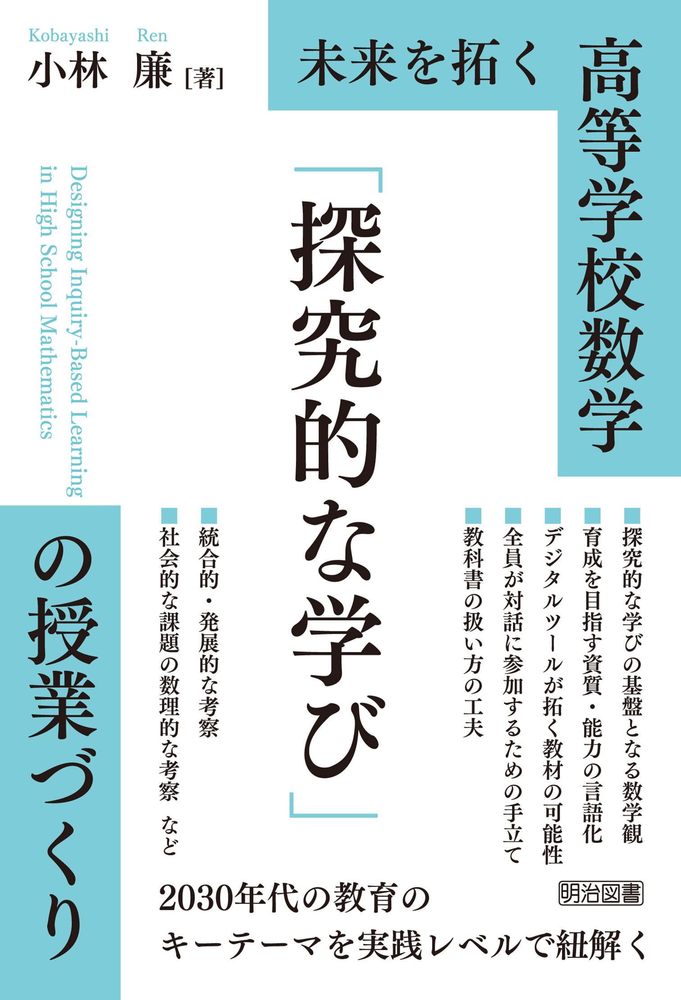

新刊発売のお知らせ
未来を拓く，高等学校数学の「探究的な学び」へ。
高等学校数学の授業を，生徒が問いをもち，自ら考え，対話しながら深く学ぶことへ。高等学校数学の「探究的な学び」を“日々の普段の授業づくり”のレベルで考えるための一冊です。

この本について
『未来を拓く 高等学校数学 「探究的な学び」の授業づくり』は，高等学校数学科の先生方が，探究的な学びを授業の中でどのように構想し，実践し，改善していくかを具体的に考えるための書籍です。目標設定，教材研究，生徒の反応を生かした授業における手立てなど，日々の授業づくりにつながる授業デザインをまとめています。
こんな先生方へ
- 生徒が数学を学ぶ意義を実感できるようにしたい
- 生徒が自ら考え，対話しながら，数学を深く学んでいけるようにしたい
- 生徒がこれからの時代を豊かに生きていくための「数学的に考える資質・能力」を身に付けられるようにしたい
本書で扱うこと
- 高等学校数学における探究的な学びとは何か，何のためか
- 目標設定の質を上げる
- 探究的な学びを実現するための教材研究
- 探究的な学びを生み出す手立て
本書のメッセージ
数学の授業を通して，一人ひとりの生徒に何を残すのか，どうすれば残せるのか。本書は，その問いを，数学教育研究をはじめとする先行研究や多様な知見を踏まえること，，多様な学校の現状を踏まえること，，生徒の学びの姿を具体的に描き出すことを通して追究しました。
SNSで紹介するための文面
著者プロフィール
小林 廉。国立教育政策研究所教育課程研究センター教育課程調査官。博士（教育学）。東京学芸大学附属国際中等教育学校教諭を経て現職。科研費基盤研究(C)「『数学的な見方・考え方』の育成を軸とする高等学校数学科の授業デザインと教育課程」を主宰。